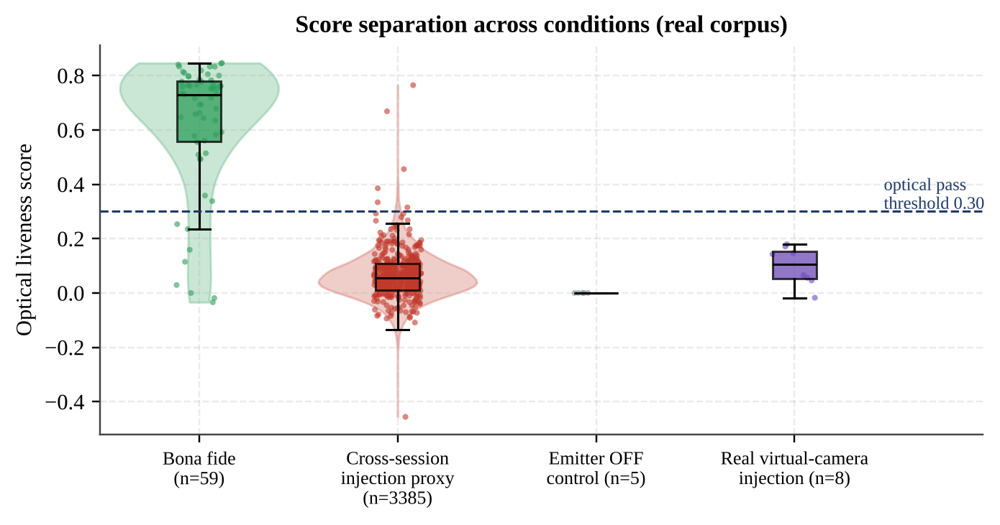
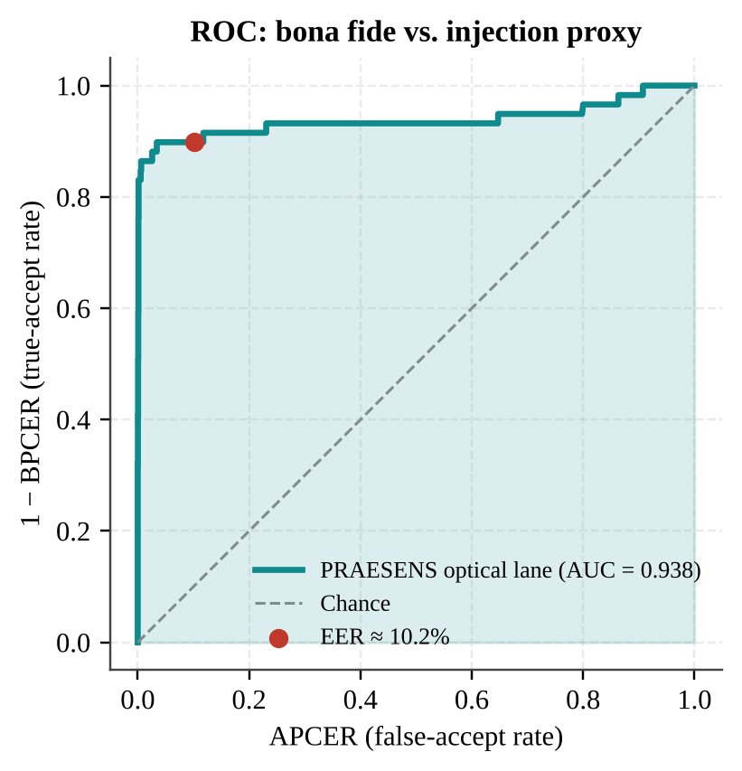
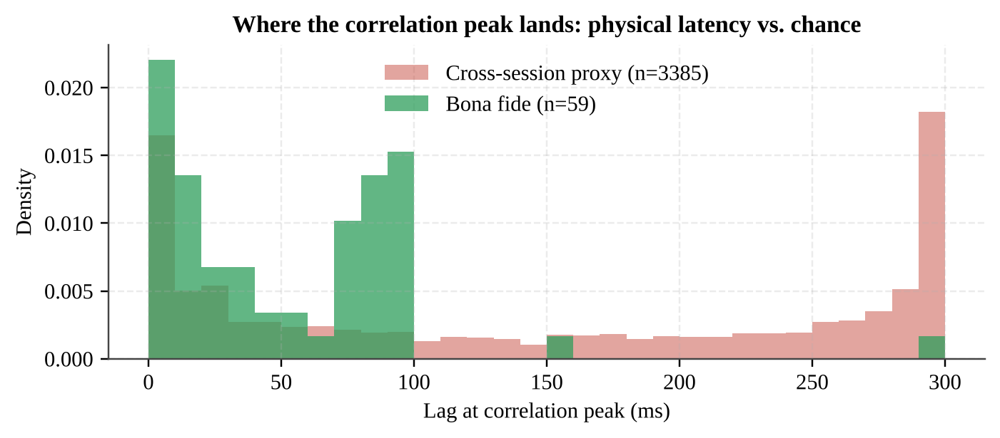
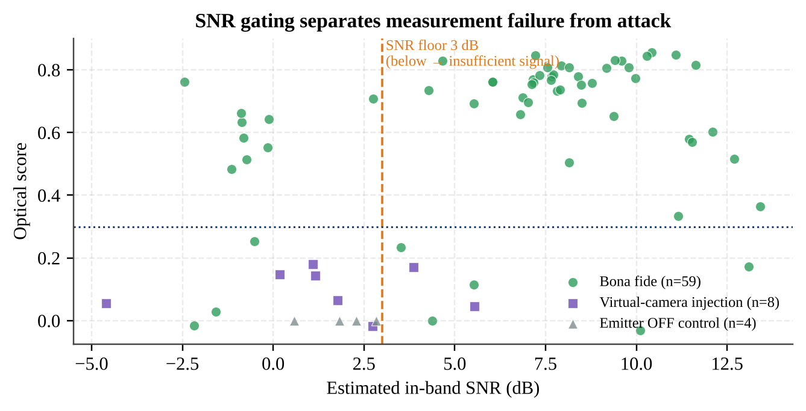
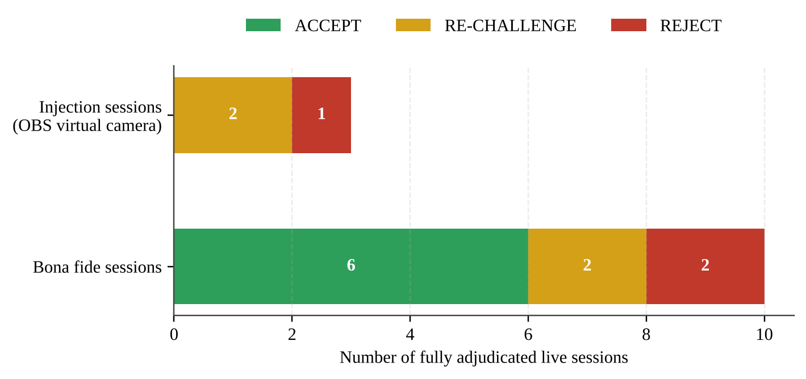
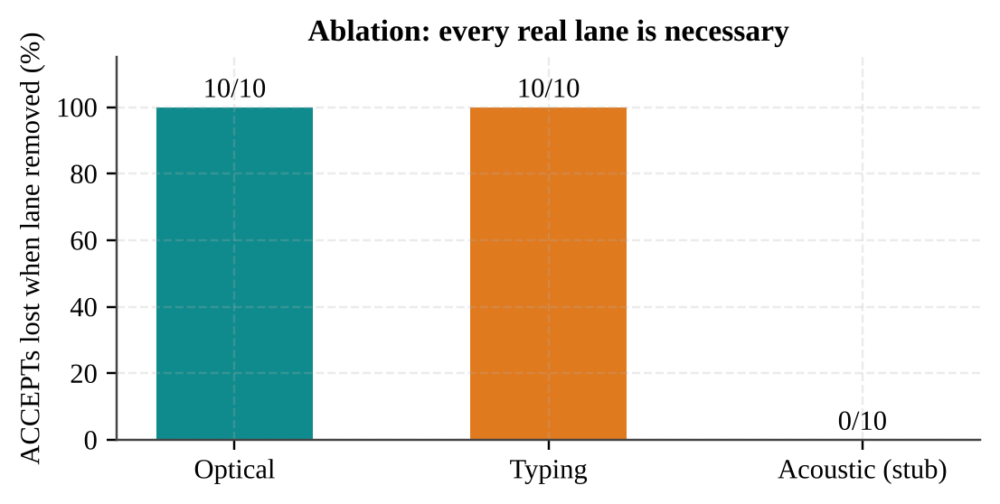
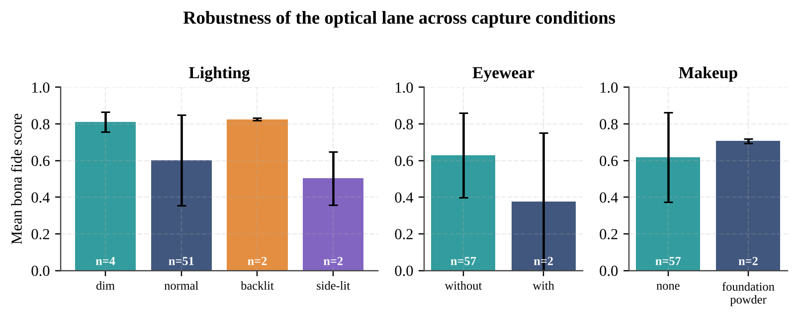
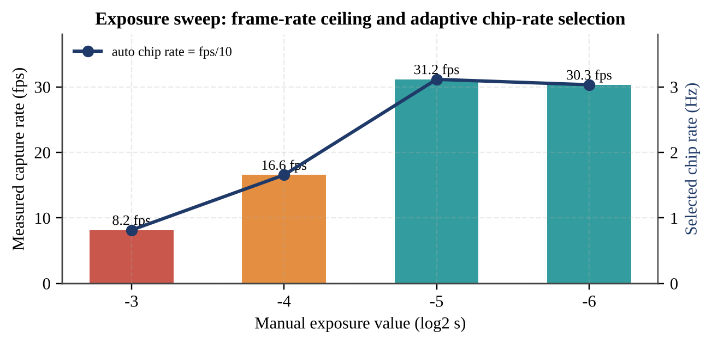

Result and Discussion
All results in this chapter come from real sessions recorded on commodity laptops between August and September 2026 and committed to the project repository as JSON logs, re-analysed with the project’s own evaluation code. Where a result is obtained from synthetic signals, this is stated explicitly.
cross-session trials
(optical lane alone)
above pass threshold
bona fide ACCEPT
or licence cost
7.1 Evaluation Corpus
| Condition | Sessions | Description |
|---|---|---|
| Bona fide | 60 | Live team members in front of the laptop; lighting (normal, dim, backlit, side-lit), distance (30–85 cm), eyewear and makeup varied |
| Emitter OFF (control) | 5 | Live person present, light pattern replaced by constant mid-grey |
| Virtual-camera injection | 8 | Pre-recorded face video injected through OBS Virtual Camera |
| Total | 73 | Plus 3,385 cross-session injection-proxy trials constructed offline |
7.2 Optical Lane: Separation and Error Rates
{{t-dist}} and {{f-dist}} show the optical score per condition. Bona fide sessions have a median score of 0.73. When the same genuine traces are scored against a mismatched challenge — the injection proxy — the median falls to 0.055. The emitter-off control collapses to 0.009 ± 0.021 even though a real, live person was in front of the camera; this single result is the strongest evidence that the score measures the physical coupling between our emitted light and the face, and not merely “a face is present”.
| Condition | n | Mean | SD | Median | Min | Max |
|---|---|---|---|---|---|---|
| Bona fide (own challenge) | 59 | 0.621 | 0.241 | 0.730 | −0.034 | 0.847 |
| Cross-session injection proxy | 3,385 | 0.063 | 0.088 | 0.055 | −0.456 | 0.765 |
| Emitter OFF control | 4 | 0.009 | 0.021 | 0.015 | −0.024 | 0.029 |
| Real virtual-camera injection | 8 | 0.099 | 0.066 | 0.105 | −0.018 | 0.179 |

Treating bona fide as positive and the cross-session proxy plus emitter-off trials as negative gives the ROC curve of {{f-roc}} and the metrics in {{t-roc}}. With the optical lane alone, the AUC is 0.938 and the EER is 10.2 %. On the first 19-session corpus (August 2026) the same analysis gave AUC 0.905 and EER 14.1 %; the improvement came from the capture fixes of Section 5.2.3 and a larger corpus, not from re-tuning thresholds.

| Metric | Aug 2026 (19 sessions) | Final (73 sessions) |
|---|---|---|
| Trials | 200 | 3,448 |
| AUC | 0.905 | 0.938 |
| EER | 14.1 % | 10.2 % |
| APCER | 14.0 % | 10.2 % |
| BPCER | 14.3 % | 10.2 % |
| ACER | 14.1 % | 10.2 % |
| EER threshold | 0.102 | 0.172 |
It is important to read these numbers correctly. The cross-session proxy is a deliberately hard negative class: each negative trial is a real face that genuinely responded to some m-sequence, so chance alignments with another session’s code occasionally produce high correlations (maximum 0.765). Moreover, these are single-lane, single-score numbers. The deployed verdict additionally requires the optical lag to be plausible and, in three-lane mode, requires the typing and acoustic lanes to pass with their own independently-drawn evidence; the probability that an attacker’s video coincidentally aligns in all of them at once is far lower than the single-lane APCER.
7.3 Timing as Evidence: Lag Analysis
Genuine responses peak at a short, physically meaningful lag — the camera’s own capture latency — with a mean of 50 ms (SD 50 ms). Mismatched trials peak almost anywhere, with a mean of 147 ms (SD 116 ms) and a large mass at the 300 ms search boundary, which is the signature of no real peak at all ({{f-lag}}). This is why the fusion layer treats a high score at an implausible lag as no evidence.

7.4 Real Injection Attacks and Fused Verdicts
Eight sessions injected a pre-recorded face video through OBS Virtual Camera. Their optical scores ranged from −0.018 to 0.179 — every one below the 0.30 pass threshold — and six of the eight were additionally flagged as insufficient signal, since an injected stream carries no in-band energy at the chip rate. {{f-snr}} plots score against SNR for all sessions: bona fide sessions cluster at high score and high SNR, while injected and emitter-off sessions sit at low score, mostly below the 3 dB floor.

Thirteen sessions were recorded after the full fusion pipeline was in place and therefore carry a complete adjudicated verdict ({{f-verdicts}}, {{t-verdicts}}).

| Ground truth | ACCEPT | RE-CHALLENGE | REJECT | Total |
|---|---|---|---|---|
| Bona fide | 6 | 2 | 2 | 10 |
| Virtual-camera injection | 0 | 2 | 1 | 3 |
No attack was ever accepted. Every injection attempt ended in REJECT or RE-CHALLENGE. Of the four bona fide sessions that were not accepted, two occurred on 13 September while the acoustic lane still had the clock-drift defect described in Section 5.1.6, and the other two were genuine optical failures (one with insufficient signal, routed honestly to RE-CHALLENGE). After the acoustic fix, the complete three-lane bona fide session scored optical 0.75 (lag 25 ms, SNR 7.1 dB), typing 1.00 (27/27 characters, mean inter-key 0.146 s) and acoustic 0.93 (lag 332 ms, SNR 10.8 dB), and was ACCEPTED with a joint score of 0.89.
7.5 Defence in Depth: Spatial Challenge and Ablation
The adaptive-injector test drives the real image-processing code path of the attack — screen-estimated waveform, Y-channel luminance multiply — on an unrelated source video. With a perfect estimate, the attack raises the global optical score from 0.053 to 0.951, i.e. it would defeat a single-zone system. The spatial assignment score, however, stays at −0.020, so the attack is exposed ({{f-spatial}}). This demonstrates why the spatially-differential challenge is a necessary design element and not an optional refinement.
The ablation study recomputes the verdict with each lane removed ({{f-ablation}}). Among the ten sessions that ACCEPTed with all lanes present, removing the optical lane or the typing lane withdrew acceptance in 10 of 10 cases (100 %), leaving RE-CHALLENGE — never a manufactured ACCEPT or REJECT. Each real lane is therefore necessary, not merely additive. (For this analysis the typing lane was represented by a fixed, clearly-labelled synthetic result, because the historical optical corpus predates the typing lane; the acoustic entry was the stub at that time.)

7.6 Robustness and Operating Conditions
{{f-robust}} breaks the bona fide score down by capture condition. Dim and backlit lighting gave high scores (0.81 and 0.83): with less ambient light, the screen is a larger fraction of the light on the face. Side-lighting reduced the mean to 0.50, and eyewear (n = 2) reduced it to 0.38 because lens reflections and frames disturb the cheek ROIs. Foundation makeup did not hurt (0.71). One session at 80 cm failed (0.03), indicating a practical working distance of about 30–70 cm, which matches normal laptop use. The sample sizes for some conditions are small and these results are indicative rather than conclusive.

Frame rate is the dominant hardware constraint. {{f-exposure}} reproduces the exposure sweep: each one-step increase in exposure time halves the achievable frame rate (8.2 fps at −3 versus 31.2 fps at −5), irrespective of pixel format. Adaptive chip-rate selection keeps the system working across this range; with exposure −4 and correct warm-up, a real session ran at 16.0 fps with a 1.60 Hz chip rate, 556 of 556 frames with a detected face, SNR 7.72 dB and score 0.786.

7.7 Comparison with Existing Approaches
| Property | Passive texture / CNN PAD | Forensic deepfake classifiers | Single-channel active (screen flash / echo) | PRAESENS |
|---|---|---|---|---|
| Detects camera-bypassing injection | No | Partly (known fakes) | Yes | Yes |
| Robust to better generators | No | No | Yes | Yes |
| Resists screen-observing adaptive attacker | — | — | Weak (one global code) | Yes (spatial codes) |
| Independent physical channels | 1 | 1 | 1–2 | 3, one shared secret |
| Training data required | Yes | Yes | Often | No |
| Extra hardware | No | No (GPU often) | Smartphone-specific | No (any laptop) |
| Explainable verdict | No | No | Partly | Yes, per lane |
| Separates “no signal” from “attack” | No | No | Rarely | Yes (SNR gating) |
7.8 Cost Analysis
PRAESENS was designed to cost nothing beyond the computer the user already owns. {{t-cost}} itemises development and deployment costs.
| Item | Development cost | Per-deployment cost |
|---|---|---|
| Laptop with webcam, speaker, microphone | Already owned (₹0 incremental) | ₹0 (uses existing device) |
| Depth / IR / specialised sensors | Not required | ₹0 |
| Python, OpenCV, MediaPipe, NumPy, SciPy, OBS | ₹0 (open source) | ₹0 |
| Training dataset and GPU training | Not required | ₹0 |
| Cloud inference / API calls | Not required | ₹0 (runs fully on-device) |
| Energy per 40 s verification (≈ 60 W × 40 s ≈ 0.67 Wh at ₹8/kWh) | — | ≈ ₹0.005 |
| Total | ₹0 | < 1 paisa per verification |
By contrast, learning-based anti-spoofing requires labelled spoof datasets and GPU training, and commercial liveness services are generally licensed per verification. Against the scale of losses that a single successful deepfake impersonation can cause {{c:cnn_hk}}, a training-free, hardware-free defence offers an exceptional cost–benefit ratio, particularly for educational institutions, small financial firms and public services.
7.9 Limitations
- The corpus is dominated by two subjects; demographic robustness, in particular across darker skin tones where skin reflectance is lower {{c:anderson}}, requires a larger multi-subject study. The SNR-gated RE-CHALLENGE path is designed to fail safe in exactly that case.
- Real attack sessions so far are static virtual-camera injections; a live end-to-end run of the adaptive injector and a ≥ 20-switch collapse-latency distribution are built and unit-tested but not yet collected.
- Session length (20–40 s) is longer than commercial passive checks, driven by the frame-rate ceiling at face-detectable exposure.
- The acoustic lane depends on the output device: Bluetooth earbuds or muted speakers make it fail (correctly reported, but inconvenient).